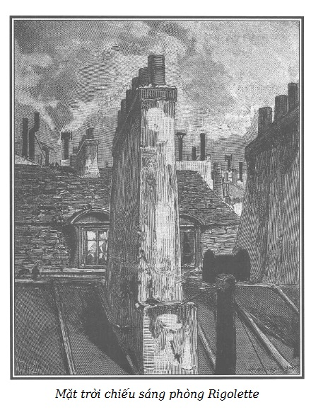

Phòng của Rigolette lúc nào cũng sáng lên sự sạch sẽ đỏm dáng, cái đồng hồ quả quýt lớn bằng bạc đặt trên lò sưởi, trong cái hộp gỗ hoàng dương, mới bốn giờ, trời đã đỡ rét, cô thợ tiết kiệm không đốt lò sưởi.
Thấp thoáng qua khung cửa sổ, người ta thấy một góc trời xanh xao, những mái nhà, ống khói lô nhô, làm thành chân trời ở phía phố bên kia.

.Đột nhiên, một tia nắng lạc lối, lọt giữa hai đầu hồi nhà cao, làm đỏ rực trong ít phút những tấm kính của phòng cô gái.
Rigolette ngồi bên cửa sổ làm việc, khuôn mặt rất xinh, trông nghiêng, dịu dàng giữa sáng tối, nổi bật trên nền kính trong sáng như mảnh đá chạm nổi sắc trắng hồng, đặt trên một nền đỏ thắm.
Từng đốm sáng chạy trên mái tóc đen, buộc sau gáy và pha một màu hổ phách ấm áp vào đôi bàn tay ngà bé nhỏ, chăm chỉ, thoăn thoắt đẩy chiếc kim với sự thành thạo khó so sánh.
Những nếp áo dài xanh nâu, nổi lên đường răng cưa của cái tạp dề xanh, che một phần cái ghế tựa độn rơm, hai bàn chân xinh xắn lúc nào cũng đi giày nghiêm chỉnh, tựa lên mép của một cái ghế đẩu đặt phía trước.
Như một ông hoàng đôi khi lại bày trò vui, lấy len dạ rực rỡ phủ lên tường vách của một túp tranh, mặt trời lặn làm rực lên trong chốc lát căn phòng nhỏ, bằng nghìn tia lửa óng ánh, làm nổi lên những đường vân vàng trên các màn che bằng vải in hoa xanh và xám, làm sáng lên nước bóng của gỗ hồ đào, sàn nhà lấp loáng như lát bằng đồng đỏ và lợp vàng cái lồng chim của cô thợ trẻ.
Nhưng hỡi ôi, mặc dù tia nắng vui vẻ như trêu ghẹo, hai con hoàng yến trống và mái bay xập xòe, chúng có dáng lo âu và không hót như thường ngày.
Bởi vì, trái với lệ thường, Rigolette hôm nay không hát.
Cả ba không bao giờ ríu rít mà không có nhau. Hầu như bao giờ cũng tiếng hát tươi mát và sớm sủa của người đánh thức tiếng hót của chim, vốn lười nhác hơn, nên không rời tổ sớm như thế.
Lúc đó những âm thanh trong trẻo tuyệt vời, trong như ngọc, sáng như bạc, thách thức đua tranh với nhau, và không phải lúc nào chim cũng giành phần thắng.
Rigolette không hát, vì lần đầu tiên trong đời cô thấy buồn.
Cho đến hôm nay, cảnh nghèo của gia đình Morel cũng nhiều khi làm cô xúc động. Nhưng những cảnh như thế quá quen thuộc đối với tầng lớp nghèo khổ để có thể tạo được những cảm xúc lâu bền.
Sau khi đã hầu như hằng ngày cứu giúp những người khốn khổ ấy hết sức, chân thành rơi nước mắt với họ và vì họ, cô cảm thấy xúc động vì những cảnh khổ ấy, hài lòng vì thấy mình có mối từ tâm.
Nhưng đó không phải là nỗi buồn.
Chẳng mấy lúc cái vui tự nhiên của Rigolette lại trở lại. Không hề ích kỷ, chỉ một sự so sánh đơn giản, cô cảm thấy sung sướng trong căn phòng bé nhỏ của mình, khi ra khỏi cái tổ kinh khủng của gia đình Morel, nỗi buồn ngắn ngủi của cô tan biến ngay.
Cái cảm tưởng để đổi thay ấy không phải thuộc tính cách mà do một lý luận khá tế nhị. Cô coi đó như một bổn phận phải giúp đỡ những người khốn khổ hơn mình để có thể yên tâm hưởng một cuộc sống rõ ràng còn bấp bênh, hoàn toàn do sức lao động mà có, nhưng so với cảnh khốn cùng của gia đình bác thợ mài ngọc thì có thể coi gần như là sang trọng.
Để có thể hát mà không ân hận, khi có những người khổ như thế sống ở bên cạnh mình, cô ngây thơ nói, mình phải có lòng nhân ái với họ.
Trước khi cho bạn đọc biết nguyên nhân nỗi buồn đầu tiên của Rigolette, chúng tôi muốn làm bạn yên tâm, làm cho bạn biết về đạo đức của cô gái này.
Chúng tôi tiếc đã dùng danh từ đạo đức, một danh từ to tát, khoa trương, long trọng, hầu như lúc nào cũng bao hàm những hy sinh đau đớn, đấu tranh gian khổ với dục vọng, suy tư nghiêm khắc về cứu cánh của các sự vật ở thế gian.
Đạo đức của Rigolette không phải như vậy.
Cô không đấu tranh, cũng không suy tư.
Cô làm việc, cô cười và cô hát.
Cô không có thì giờ rảnh để yêu đương.
Trước hết cô là con người vui vẻ, chăm chỉ, ngăn nắp, trật tự, niềm vui đã bảo vệ, nâng đỡ, cứu vớt cô mà cô không hề biết.
Có thể người ta thấy cái luân lý ấy nhẹ nhàng, dễ dàng và vui vẻ, nhưng nguyên nhân nào mà chẳng được, miễn là vẫn có kết quả?
Rễ mọc theo hướng nào chẳng được, miễn là hoa vẫn nở tinh khiết, rực rỡ và thơm tho.
Nhân ý nghĩ không tưởng của chúng tôi về sự động viên, giúp đỡ, tưởng lệ của xã hội, đáng lẽ phải dành cho những người thợ đáng chú ý vì có những phẩm chất đạo đức, một trong những dự định của Hoàng đế.
Giả sử như ý kiến phong phú của con người vĩ đại ấy được thực hiện.
Một trong những nhà thật sự bác ái đó, được Hoàng đế giao cho nhiệm vụ đi tìm người tốt, đã phát hiện ra Rigolette.
Bị bỏ rơi, không người khuyên bảo, không nơi nương tựa, tiếp cận với mọi sự hiểm nguy của cảnh nghèo khó, mọi sự cám dỗ mà tuổi trẻ và sắc đẹp thường bị bao vây, cô gái xinh đẹp ấy vẫn trong trắng, cuộc đời lương thiện và sự chăm chỉ của cô có thể là bài học, là tấm gương.
Phải chăng cô ấy xứng đáng, không phải chỉ với một phần thưởng, một sự cứu trợ, mà vài lời cảm động tỏ sự đồng tình, khuyến khích sẽ làm cho cô có ý thức về giá trị bản thân, nâng cô lên ngay trước mắt và giúp đỡ cô cả trong tương lai.
Bởi vì cô sẽ biết người ta ân cần theo dõi, bảo vệ cô trên con đường khó khăn mà cô đang đi với tấm lòng quả cảm, trong sáng.
Bởi vì cô biết rằng, nếu một ngày kia cô thiếu việc làm hay bệnh tật đe dọa phá vỡ cân bằng cuộc sống nghèo khổ và bận rộn ấy, một cuộc sống hoàn toàn dựa vào lao động và sức khỏe, cô sẽ nhận được một sự cứu trợ nhẹ nhàng bởi những ưu điểm trước đây của cô.
Chắc chắn người ta sẽ la lối về sự không thể có một sự theo dõi để bảo trợ những người đặc biệt đáng chú ý vì quá khứ tốt đẹp của họ.
Chúng tôi thấy xã hội đã giải bài toán đó.
Chẳng phải là xã hội đã nghĩ ra sự theo dõi suốt đời hoặc kịp thời của bộ phận an ninh cao cấp, với mục đích rất hữu ích là không ngừng kiểm soát hành động của những người nguy hiểm, có quá khứ xấu xa.
Tại sao xã hội lại không theo dõi những biểu hiện đạo lý cao đẹp?
Nhưng chúng ta hãy rời thế giới mơ mộng không tưởng và trở về với nguyên nhân nỗi buồn đầu tiên của Rigolette.
Trừ Germain ra, anh chàng ngây thơ và đứng đắn, những ông hàng xóm của cô thợ trẻ này vẫn cho thấy tính thân thiện đặc biệt của cô, sự tốt bụng hay giúp đỡ người lân cận là những điểm khơi gợi rất có ý nghĩa. Nhưng, mặc dầu vừa ngạc nhiên, vừa bực bội, người ta bắt buộc phải thừa nhận Rigolette là một người bạn vui vẻ, đáng yêu trong những buổi vui chơi ngày Chủ nhật, một cô láng giềng tốt bụng, hiền hậu, chứ không phải một ả nhân tình.
Sự ngạc nhiên và bực bội của họ, lúc đầu khá lớn, lùi dần trước sự chân thật, vẻ đáng yêu của cô thợ trẻ, và cũng như cô đã nói với Rodolphe, láng giềng của cô rất tự hào ngày Chủ nhật được sánh vai với cô gái xinh đẹp, làm vinh dự cho họ bằng nhiều cách mà sự tốn kém chỉ là sự chia sẻ những cuộc vui nhỏ mọn, sự có mặt và vẻ duyên dáng của cô làm tăng giá trị lên nhiều lần.
Vả lại, cô gái ấy sống mới đơn giản làm sao! Trong những ngày thiếu thốn, cô ăn rất ngon lành một mẩu bánh nóng được cắn thật khỏe bằng hàm răng trắng nhỏ đều. Sau đó cô vui vẻ đi dạo trên các đại lộ hoặc đường ngang. Nếu bạn đọc có đôi chút cảm tình với Rigolette chắc hẳn sẽ thấy phải ngu ngốc hoặc man rợ mới không cho phép một cô gái xinh tươi như vậy, mỗi tuần một lần, tham gia những trò giải trí bình thường, bởi xét cho cùng, cô không có quyền ghen tuông, ngăn cản những chàng trai đang lẽo đẽo theo cô được an ủi bằng cách tìm những cô khác dễ tính hơn.
Riêng François Germain không nuôi hy vọng điên rồ trên tính thân mật của một cô gái. Phải chăng đây là bản năng của trái tim hay sự tinh tế của trí tuệ, ngay từ ngày đầu, cậu ta đã đoán ra tất cả những gì là mê ly trong tình bạn đặc biệt mà Rigolette ban cho.
Cái gì phải đến đã đến.
Germain yêu say đắm cô láng giềng, không dám nói một lời với cô về mối tình đó.
Hoàn toàn không bắt chước những người đến trước mình, biết rằng theo đuổi cũng vô ích, tự an ủi bằng những mối tình khác nhưng vẫn sống hòa thuận với cô láng giềng. Germain được sống gần gũi, thú vị bên cô, không những ngày Chủ nhật, mà tất cả các tối không bận việc. Trong hàng giờ liền, Rigolette lúc nào cũng cười nói rất vui vẻ, Germain thì nhẹ nhàng, chăm chú, nghiêm chỉnh, nhiều khi hơi buồn.
Cái buồn ấy là nhược điểm duy nhất của cậu ta, bởi vì phong thái của cậu ta vốn tao nhã, không thể đem so sánh với những cung cách lố bịch của ông Giraudeau làm nghề đi chào hàng, cách trêu chọc láo xược của Cabrion. Nhưng ông Giraudeau với tính liến thoắng bất tận, ông họa sĩ với tính hài hước cũng bất tận, hơn cậu ta ở những chỗ đó thì tính trầm lặng nhẹ nhàng của cậu ta cũng có một ít ấn tượng đối với cô láng giềng.
Cho đến lúc đó, Rigolette chưa nghiêng hẳn về người nào trong số ba người say mê cô. Nhưng vì không thiếu đầu óc suy luận, cô thấy chỉ Germain có đủ các đức tính cần thiết để đem lại hạnh phúc cho một người phụ nữ đứng đắn.
Những điều cần nói trước đã được trình bày, chúng tôi sẽ nói tại sao Rigolette buồn và tại sao cô và các con chim của cô im lặng.
Khuôn mặt tròn và tươi tắn của cô hơi nhợt nhạt đi. Đôi mắt to đen thường ngày vui và sáng, nay hơi mệt mỏi và thoáng mờ. Các đường nét trên mặt chứng tỏ một sự mệt mỏi bất thường. Cô đã phải làm việc một phần lớn trong đêm.
Thỉnh thoảng, cô buồn bã nhìn một lá thư mở trên cái bàn bên cạnh. Lá thư ấy do Germain viết cho cô, nội dung như sau:
“Nhà tù Conciergerie
Thưa cô,
Nơi tôi ngồi viết thư nói lên tai họa tôi gặp phải lớn biết bao nhiêu. Tôi bị giam giữ vì tội ăn cắp. Tôi là một tội phạm trước mắt mọi người, thế mà tôi dám viết thư cho cô!
Bởi vì nghĩ rằng cô cũng coi tôi như một kẻ tội phạm đê hèn là điều quá đau khổ với tôi. Tôi xin cô, đừng kết tội tôi trước khi đọc hết bức thư này. Nếu cô xua đuổi tôi… đòn cuối cùng ấy sẽ đánh tôi gục ngã hoàn toàn!
Việc xảy ra như sau:
Lâu nay tôi không ở phố Temple nữa, nhưng nhờ Louise, tôi biết rằng gia đình Morel mà cô và tôi đều rất quan tâm, ngày càng khốn đốn hơn.
Hỡi ôi! Lòng thương của tôi đối với những người khốn khổ ấy đã làm hại tôi! Tôi không hối tiếc, nhưng số phận đối với tôi thật tàn ác!
Hôm qua, tôi ở lại nhà ông Ferrand khá muộn vì một số giấy tờ cần kíp. Trong phòng tôi làm việc có một bàn giấy, ông chủ tôi hằng ngày xếp giấy tờ tôi làm vào đấy. Chiều hôm ấy, ông ta có vẻ băn khoăn lo lắng, nói với tôi: ‘Anh đừng về trước khi làm xong những khoản tính toán ấy, anh bỏ cả vào trong bàn giấy, tôi giao chìa khóa cho anh.’ Và ông ta đi ra.
Công việc xong, tôi mở ngăn kéo để xếp giấy tờ vào. Như một cái máy, mắt tôi dừng lại trên lá thư để mở, tôi đọc thấy tên Jérôme Morel, ông thợ mài ngọc.
Thú thật, thấy tên con người bất hạnh đó, tôi đã tò mò đọc lá thư. Do đó, tôi biết ngày hôm sau ông ấy sẽ bị bắt vì một tờ hối phiếu một nghìn ba trăm franc do ông Ferrand truy tố dưới một cái tên giả mạo, và ông này sẽ bị tống giam.
Cái giấy báo ấy là của nhân viên giao dịch của ông chủ tôi. Tôi biết khá rõ hoàn cảnh gia đình Morel để hiểu việc bắt giam người trụ cột duy nhất của gia đình này sẽ là một đòn thế nào đối với họ. Tôi vừa ngao ngán, vừa phẫn nộ. Không may, cũng trong ngăn kéo ấy, tôi thấy một cái hộp để mở đựng tiền vàng, có hai nghìn franc. Lúc đó, tôi nghe tiếng Louise đi lên thang gác. Không nghĩ đến tính chất nghiêm trọng của việc làm này, nhân cơ hội ngẫu nhiên đó, tôi lấy một nghìn ba trăm franc. Tôi đợi Louise đi ngang qua, đặt tiền vào tay cô ấy và nói: ‘Người ta sẽ đến bắt bố cô vào sáng sớm ngày mai vì một hối phiếu một nghìn ba trăm franc mà ông ấy không thể trả. Tiền đây, khi trời sáng, cô hãy chạy về nhà. Mãi đến hôm nay tôi mới biết lão Ferrand là một kẻ độc ác… Nhớ kĩ, chớ có nói là nhận số tiền này từ tôi.’
Cô thấy đấy, ý đồ của tôi thì tốt nhưng cách làm của tôi thì có tội. Tôi không giấu cô điều gì cả. Và đây là điều có thể tha thứ cho tôi.
Từ lâu, do vô cùng tiết kiệm, tôi đã dành dụm và gửi ngân hàng một số tiền nhỏ một nghìn năm trăm franc. Cách đây tám ngày, ông chủ ngân hàng đã báo trái phiếu của tôi hết kỳ hạn, tôi có thể rút ra hay để lại tùy ý.
Như vậy tôi đã có nhiều hơn khoản tôi lấy ở ông chưởng khế. Tôi có thể lĩnh một nghìn năm trăm franc vào ngày hôm sau. Nhưng ông thủ quỹ của ngân hàng không đến chỗ ông chủ trước mười hai giờ mà rạng sáng thì người ta sẽ đến bắt ông Morel. Tôi phải giúp ông ấy trả nợ sớm. Nếu không, dù tôi có kéo ông ấy ra khỏi nhà tù trong ngày, ông ấy vẫn bị bắt và giải đi trước mắt bà vợ và việc ấy có thể chấm dứt cuộc đời bà. Hơn nữa, các khoản phí tổn lớn về việc bắt bớ vẫn rơi xuống đầu ông thợ mài ngọc. Cô hiểu chứ, những tai họa ấy sẽ không xảy ra, nếu tôi lấy một nghìn ba trăm franc mà tôi nghĩ có thể hoàn lại ngày mai trong bàn giấy, trước khi ông Ferrand có thể nghi ngại điều gì. Không may, tôi đã lầm.
Tôi ra khỏi nhà ông Ferrand, không còn giữ được ý tưởng bất bình và thương cảm đã khiến tôi hành động. Tôi nghĩ đến tất cả sự nguy hiểm của tình thế này, nghìn nỗi lo sợ ập vào người. Tôi biết tính nghiêm khắc của ông chưởng khế. Sau khi tôi đi khỏi, ông ta có thể trở lại lục lọi trong bàn giấy, biết được việc mất cắp, bởi vì trước mắt ông ta, trước mắt mọi người, đó là ăn cắp.
Những ý nghĩ ấy làm đảo lộn tôi. Mặc dù, đêm đã khuya, tôi chạy đến chỗ ông chủ ngân hàng, van nài ông ấy cho lấy tiền ngay, tôi sẽ tìm một lý do cho yêu cầu bất thường đó. Tôi sẽ quay lại chỗ ông Ferrand, thay thế vào số tiền đã lấy.
Một sự ngẫu nhiên tai hại, ông chủ ngân hàng đã hai ngày qua lại Belleville, trong ngôi nhà nghỉ mát, và trồng cây ở đó. Tôi đợi trời sáng với sự khắc khoải mỗi lúc một tăng, cuối cùng tôi đến Belleville. Mọi sự đều chống lại tôi. Ông chủ ngân hàng vừa trở về Paris. Tôi chạy về, lấy được tiền. Tôi tìm ông Ferrand thì câu chuyện đã bị lộ.
Đây mới chỉ là một phần sự bất hạnh của tôi. Bây giờ ông chưởng khế buộc tội tôi ăn cắp mười lăm nghìn franc tiền giấy, ông ta nói, để cùng với hai nghìn franc vàng trong ngăn kéo bàn. Đó là một lời buộc tội khốn nạn, một sự nói dối tồi tệ! Tôi thú nhận có sai lầm trong sự việc trước, nhưng tôi thề với cô, có sự chứng giám của những gì linh thiêng nhất trên đời, tôi vô tội trong trường hợp thứ hai. Tôi không thấy có tờ bạc giấy nào trong ngăn kéo, chỉ có hai nghìn franc vàng, tôi đã lấy đi một nghìn ba trăm franc và đã trả lại.
Sự thật là vậy, thưa cô. Tôi phải chịu một sự buộc tội độc ác. Nhưng tôi quả quyết là cô biết tôi không thể nói dối. Liệu cô có tin tôi không? Hỡi ôi, như ông Ferrand đã nói với tôi, người đã ăn cắp một số tiền nhỏ có thể ăn cắp một số tiền lớn hơn và lời nói của nó không thể nào tin được.
Cô ơi, tôi thấy cô lúc nào cũng rất tốt và tận tâm với người khốn khổ. Tôi biết cô rất ngay thẳng, rất chân thật, tôi hy vọng trái tim cô sẽ hướng dẫn cô đánh giá sự thật. Tôi không đòi hỏi gì hơn nữa. Cô hãy tin lời tôi. Cô sẽ thấy tôi vừa đáng thương, vừa đáng trách. Bởi vì, tôi xin nhắc lại, ý đồ của tôi tốt, nhưng tình huống không lường trước được đã làm hại tôi.
A! Cô Rigolette, tôi thật đau khổ! Nếu cô biết tôi phải sống với những người như thế nào cho đến ngày xử án!
Hôm qua người ta dẫn tôi đến nơi tạm giam của Sở Cảnh sát. Tôi không thể nói với cô điều tôi cảm thấy, sau khi lên một cái thang gác tôi đến trước một cái cửa sắt có ghi-sê, người ta mở cửa ra và đóng lại sau lưng tôi.
Tôi bối rối đến nỗi ban đầu không nhận thấy gì hết. Một luồng không khí nóng, buồn nôn, đập vào mặt. Tôi nghe thấy tiếng nói to, ồn ào, điểm đôi tiếng cười rùng rợn, tiếng thét giận dữ và tiếng hát tục tĩu. Tôi đứng im, gần cửa, nhìn những viên gạch lát bằng sa thạch, không dám tiến lên, không dám ngước mắt, tưởng rằng mọi người đều chăm chú nhìn mình.
Chẳng ai chú ý đến tôi, thêm hay bớt một người tù chẳng làm họ quan tâm. Cuối cùng, tôi thử ngẩng đầu lên. Trời, những bộ mặt gớm ghiếc, những chiếc áo rách tả tơi, những mảnh giẻ lấm bùn! Tất cả bộ mặt của khốn cùng và tội lỗi. Họ có bốn mươi hoặc năm mươi người, ngồi, đứng, hoặc nằm trên những ghế băng đóng vào tường, du đãng, trộm cướp, giết người, tất cả những người bị bắt ban đêm hay trong ngày.
Khi họ nhìn thấy sự có mặt của tôi, tôi có một điều an ủi đáng buồn là họ biết tôi không phải người của họ. Một vài người nhìn tôi có vẻ láo xược và chế nhạo, và họ nói nhỏ với nhau thứ tiếng gì tôi không hiểu. Sau một hồi, đứa tợn nhất đến đập vào vai tôi và đòi tiền nhập bọn.
Tôi cho họ một vài đồng, hy vọng mua được sự yên ổn. Họ thấy không đủ, đòi thêm, tôi từ chối. Lập tức nhiều đứa bao vây tôi, chửi mắng, đe dọa. Chúng sắp ra tay thì may thay, nghe có tiếng lộn xộn một người gác đi vào. Tôi đến kêu với người ấy, người ấy bắt họ phải trả lại tiền cho tôi và nói với tôi là nếu tôi muốn, thì với một số tiền nhỏ mọn, tôi sẽ được dẫn đến phòng giam ưu đãi, có nghĩa là tôi có thể được một mình một xà lim. Tôi nhận lời với lòng biết ơn, và tôi rời bọn kẻ cướp giữa những lời đe dọa, bởi vì, chúng nói sẽ còn gặp nhau.
Người ấy dẫn tôi đến một xà lim, tôi ở lại đấy cho đến sáng.
Cô Rigolette, tôi viết thư cho cô sáng nay, tại nơi này. Chốc nữa, sau khi lấy khẩu cung xong, tôi sẽ bị dẫn đến một nhà tù khác, nhà Trừng giới, ở đấy tôi lo sẽ gặp lại vài người trong số những người ở nhà tạm giam.
Người gác, chú ý đến nỗi đau khổ và nước mắt của tôi, đã hứa với tôi chuyển thư này đến tay cô, mặc dù những sự nới lỏng như thế là cấm ngặt.
Cô Rigolette, tôi trông chờ vào sự giúp đỡ cuối cùng trên tình bạn cũ trước đây, nếu bây giờ cô không xấu hổ vì thứ tình bạn đó.
Trong trường hợp cô vui lòng chấp nhận thì như thế này: cô nhận cùng với lá thư này một chìa khóa và vài chữ viết cho người gác cổng nhà tôi, ở đại lộ Saint-Denis, số nhà 11. Tôi báo cho ông ấy biết cô có thể định đoạt, như chính tôi, tất cả những đồ vật của tôi và ông ấy phải thực hiện mệnh lệnh của cô. Ông ấy sẽ dẫn cô đến phòng tôi. Cô làm ơn mở tủ với cái chìa khóa mà tôi gửi theo. Cô sẽ thấy một cái phong bì lớn đựng nhiều giấy tờ mà cô làm ơn cất giữ cho, một trong những giấy tờ là gửi cho cô, theo địa chỉ cô sẽ thấy. Nhiều tờ khác viết về cô, trong những thời kỳ tôi hạnh phúc. Đừng mếch lòng cô ạ, đáng lẽ cô không biết những giấy tờ đó. Tôi cũng xin cô lấy giùm ít tiền còn lại trong tủ và một cái túi xa tanh đựng cái cà vạt nhỏ bằng tơ màu da cam, cô mang nó theo trong những buổi đi dạo cuối cùng, ngày chủ nhật của chúng ta và cô đã tặng tôi ngày tôi rời phố Temple.
Tôi mong rằng, trừ một số ít đồ lót mà cô sẽ gửi đến nhà Trừng giới cho tôi, cô hãy bán tất cả đồ đạc và quần áo của tôi. Được thả hay bị tù, tôi vẫn bị sỉ nhục và buộc phải rời Paris. Đi đâu? Sống bằng gì? Có trời mới biết.
Bà Bouvard, người đã từng bán và mua một số đồ vật, có thể đảm đương việc đó. Bà là một người thật thà. Sắp đặt như vậy sẽ đỡ lúng túng cho cô, bởi vì tôi biết thì giờ của cô rất quý.
Tôi đã trả tiền nhà, tôi chỉ xin cô vui lòng cho người gác cổng một số tiền nhỏ. Cô tha lỗi đã quấy rầy cô nhiều việc lặt vặt, nhưng cô là người duy nhất trên đời tôi dám nhờ vả và có thể nhờ.
Tôi có thể nhờ sự giúp đỡ của một ông thư lại nào đó của ông Ferrand mà trước đây tôi đã có nhiều liên hệ. Nhưng tôi lại sợ sự tò mò của ông ta về một số giấy tờ. Nhiều tờ có dính líu đến cô, như tôi đã nói, một số tờ khác có liên quan đến những sự việc buồn trong đời tôi.
Cô Rigolette, cô hãy tin tôi, nếu cô đồng ý với tôi, bằng chứng cuối cùng của tình bạn cũ ấy là niềm an ủi duy nhất trong cái tai họa lớn đang đày đọa tôi, dù thế nào tôi cũng hy vọng cô không từ chối.
Tôi cũng xin phép đôi khi được viết thư cho cô… Đối với tôi, việc được vơi bớt nỗi buồn nặng trĩu sang một trái tim bao dung là rất nhẹ nhàng, và rất quý.
Hỡi ôi! Tôi chỉ có một mình trên đời, không ai quan tâm đến tôi. Nỗi cô đơn ấy trước đây đã nặng nề với tôi, huống chi bây giờ…
Tuy nhiên, tôi vẫn là người lương thiện. Tôi ý thức được mình chưa làm hại ai bao giờ, dù cho nguy hiểm đến tính mạng, tôi thù ghét tất cả những gì xấu như cô sẽ thấy trong những giấy tờ mà tôi yêu cầu cô giữ gìn và cô có thể đọc. Nhưng khi tôi nói điều này, ai sẽ tin tôi? Ông Ferrand được mọi người kính trọng, từ lâu ông ta nổi tiếng trung thực, ông ta chê trách tôi là đúng. Ông ta sẽ đè nát tôi. Tôi sẽ nhẫn nhục chịu đựng số kiếp của mình.
Cô Rigolette, cuối cùng nếu cô tin tôi, tôi hy vọng cô sẽ không khinh tôi một chút nào, cô sẽ phàn nàn cho tôi và đôi khi cô sẽ nhớ đến người bạn chân thành này. Và nếu tôi được cô thương hại, có thể cô sẽ mở lòng độ lượng một ngày Chủ nhật (Hỡi ôi! Từ ấy nhắc cho tôi bao nhiêu kỷ niệm)… một ngày Chủ nhật, cô không ngại phải bước vào phòng thân nhân của nhà tù. Nhưng không, không gặp nhau ở một nơi như thế. Tôi không bao giờ dám… Tuy nhiên, cô rất tốt… rằng…
Tôi buộc phải dừng lá thư để gửi cô, với cái chìa khóa và mấy chữ cho ông gác cổng mà tôi viết vội vàng. Người gác đến báo, tôi sẽ được dẫn đi gặp quan tòa. Vĩnh biệt, vĩnh biệt, cô Rigolette… Đừng hắt hủi tôi! Tôi chỉ hy vọng ở cô mà thôi!
FRANÇOIS GERMAIN
T.B: Nếu cô trả lời tôi, xin gửi thư về nhà Trừng giới.”
Bây giờ thì ta biết nguyên nhân nỗi buồn đầu tiên của Rigolette. Trái tim rất tốt của cô rung động sâu sắc trước một sự rủi ro mà cô không chút ngờ vực. Cô tin vào toàn bộ sự thật trong câu chuyện của Germain, đứa con bất hạnh của Thầy Đồ.
Không mấy khắt khe, cô còn thấy anh bạn láng giềng cũ khuếch đại quá nhiều tội lỗi của bản thân. Muốn cứu một ông bố gia đình khốn khổ, anh đã lấy một số tiền mà anh biết có thể hoàn lại được. Việc làm ấy, dưới mắt cô thợ, chỉ là lòng tốt.
Bởi một mâu thuẫn tự nhiên ở phụ nữ, nhất là phụ nữ thuộc tầng lớp cô, cô gái ấy, cho đến nay, chỉ mới cảm thấy với Germain, cũng như với những người láng giềng khác, một tình bạn thân mật, vui vẻ, thì nay đã nghiêng hẳn trong việc lựa chọn.
Khi cô biết anh khổ sở, bị kết tội oan, bị cầm tù, kỷ niệm về anh xóa mất kỷ niệm của những tình địch cũ.
Với Rigolette, đó vẫn chưa phải là tình yêu, chỉ là một tình cảm mạnh, chân thành, nhiều thương cảm và kiên quyết tận tâm, tình cảm này rất mới đối với cô vì xen lẫn sự cay đắng.
Đấy là tâm trạng của Rigolette khi Rodolphe bước vào phòng sau khi đã kín đáo đóng cửa.